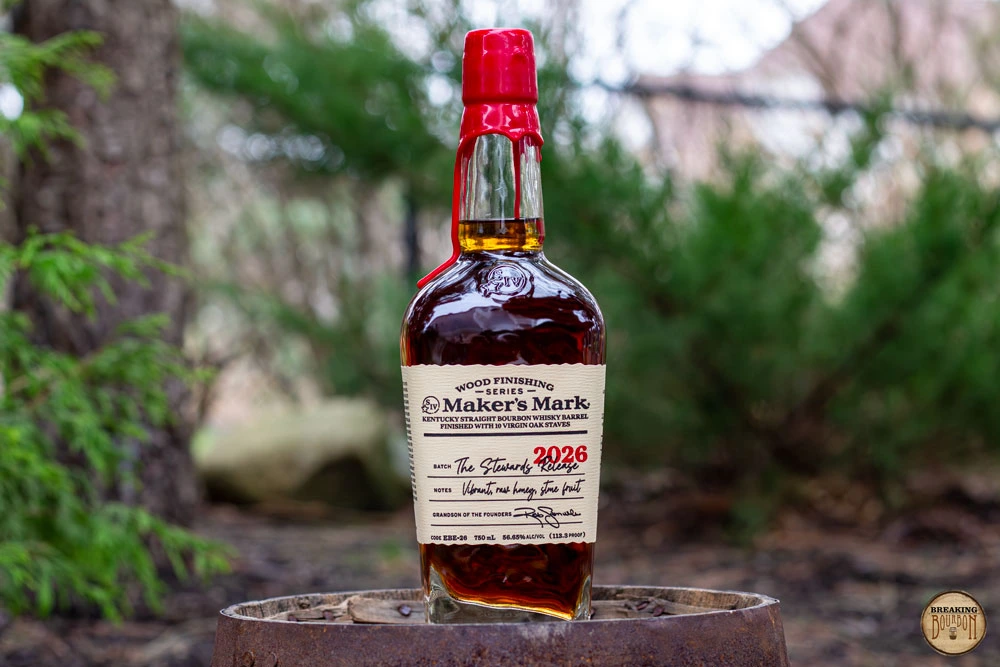

![Maker’s Mark 2026 Stewards producer artwork — 109.6-proof batch, distinct from the scored 113.3-proof batch]()

A fruit-forward improvement for one critic; earthy and dry for another.
Breaking Bourbon finds brighter cherry and raspberry with sweetness returning after a brief bitter turn. Drinkhacker finds earthy, savory herb notes and a short dry finish, preferring Keepers. Good bourbon above ordinary Maker’s but below the better integrated Keepers evidence preserves that disagreement.
The exact NC 113.3-proof 2026 price is $74.95/750 mL. Good approaching fair value fits the contested profile; Maker’s 46 Cask Strength is cheaper and has a less divided drinking case.
Scope: Named 2026 stave experiment. Proof identifies the documented review / price bottle; another batch can vary. Chapter-one releases and chapter-two staff tributes are kept separate. This assessment covers the 113.3-proof batch tasted by both credited critics and listed by NC. The separate 109.6-proof batch is acknowledged but does not inherit its score. 1
The Stewards is the named 2026 recipe. This assessment and state price are specifically the 113.3-proof batch tasted by both critics; the producer’s 109.6-proof artwork is a separate batch. Bright fruit and returning maple sweetness conflict with savory herbs and a short dry close.
The name and the identified release
Maker’s Mark’s wheated bourbon is the base for its standard strength, cask-strength and stave-finished ranges. Cellar Aged extends maturation in the limestone cellar, while Star Hill Farm is a separate wheat-whisky project. Shared branding does not transfer a bourbon score to that new category.
Named 2026 stave experiment. Proof identifies the documented review / price bottle; another batch can vary. Chapter-one releases and chapter-two staff tributes are kept separate. This assessment covers the 113.3-proof batch tasted by both credited critics and listed by NC. The separate 109.6-proof batch is acknowledged but does not inherit its score.
Primary release and catalog context. 1
Maker’s Mark Wood Finishing Series The Stewards Release (2026): Bourbon; Maker’s Mark / Suntory Global Spirits · Kentucky. Proof belongs to the identified expression / edition; any source discrepancy is stated.; NAS. Composition: C70 W16 MB14. Mature wheated bourbon is finished with specially prepared oak staves. The Stewards tribute focuses on the tasting panel and people who finish the whiskey.
Specifications without invented precision
Mature wheated bourbon is finished with specially prepared oak staves. The Stewards tribute focuses on the tasting panel and people who finish the whiskey.
Recipe: C70 W16 MB14. Age: NAS. Strength: 113.3 proof / 56.65% ABV. 1
C corn · R rye · W wheat · MB malted barley. Undisclosed proportions are not estimated from neighboring labels. A component’s oldest age is not the age of a blend. Proof is not a quality multiplier.
Exact scope. Named 2026 stave experiment. Proof identifies the documented review / price bottle; another batch can vary. Chapter-one releases and chapter-two staff tributes are kept separate. This assessment covers the 113.3-proof batch tasted by both credited critics and listed by NC. The separate 109.6-proof batch is acknowledged but does not inherit its score.
What the identified price buys
$74.95 / 750 mL · $74.95 per 750 mL · NC ABC regular retail 4
Checked October 5, 2026. A listing is not an inventory guarantee. Original or dated prices describe Value at that reference, not a confirmed current offer.
The exact NC 113.3-proof 2026 price is $74.95/750 mL. Good approaching fair value fits the contested profile; Maker’s 46 Cask Strength is cheaper and has a less divided drinking case.
Five buy-price bands
All boundaries use 750 mL equivalents. These are rounded editorial decisions, not a mechanical percentage formula or found offers.
An unusually low hypothetical price for the reviewed profile, compared with Maker’s Mark; this is an editorial threshold, not a found offer.
The preferred zone keeps the premium bounded against Maker’s Mark. Confirm the documented release or barrel scope.
A fair-price zone for the identified drinking strengths; the documented balance, texture and finish limitations still matter.
Taste before paying this premium. Maker’s Mark and the other labeled alternatives offer a useful check; collector appeal is excluded.
Above this boundary, trade up for drinking value to the credited alternatives. A lower price does not repair sensory defects.
Five buy-price bands · 750 mL equivalent
Editorial shopping guidance tied to the competing bottles below. These are practical budget boundaries, not found offers. The numeric Value assessment and reference price remain unchanged.
Exceptional buy / stock-up
Under $30.00A low purchase price makes Maker’s Mark Wood Finishing Series The Stewards Release (2026) attractive for the 113.3-proof Stewards batch, with explicit sweet-versus-savory disagreement. Maker’s Mark Wood Finishing Series The Keepers Release (2025) at $75.00 supplies the first real alternative: The same-budget preceding recipe is the directly documented better-balanced alternative for one critic.
Easy buy / sweet spot
$30.00 to under $45.00This is the sensible budget for buying Maker’s Mark Wood Finishing Series The Stewards Release (2026) for the 113.3-proof Stewards batch, with explicit sweet-versus-savory disagreement, rather than paying for the label. Compare Maker’s Mark 46 Cask Strength — release program at $54.95: A cheaper finished family bottle provides an independent fruit/texture purchase comparison.
Fair buy
$45.00 to under $68.00At this price, the case for Maker’s Mark Wood Finishing Series The Stewards Release (2026) rests on a preference for the 113.3-proof Stewards batch, with explicit sweet-versus-savory disagreement. Maker’s Mark Cask Strength — release program at $49.95 shows what the same shopping decision can buy: A cheaper un-finished family program supplies concentrated wheated sweetness without this disputed stave recipe.
Think twice / conditional
$68.00 to under $85.00The premium needs a specific preference for the 113.3-proof Stewards batch, with explicit sweet-versus-savory disagreement. Maker’s Mark Wood Finishing Series The Keepers Release (2025) remains $75.00 in its dated record; The same-budget preceding recipe is the directly documented better-balanced alternative for one critic. Do not assume scarcity improves the drinking experience.
Pass / trade up
$85.00 and aboveChoose Maker’s Mark Cask Strength — release program ($49.95 in its own dated record) before paying above this boundary solely for Maker’s Mark Wood Finishing Series The Stewards Release (2026): A cheaper un-finished family program supplies concentrated wheated sweetness without this disputed stave recipe. Historical reference prices are comparisons, not promised offers.
What actually competes with this bottle?
These alternatives are chosen for this expression’s style, strength, maturity, documented quality and purchase role. Every price below retains its own dated reference; none implies current stock.
| Bottle | Proof / age | 750 mL reference | Why consider it |
|---|---|---|---|
| Maker’s Mark Wood Finishing Series The Keepers Release (2025) | 109.2 · NAS | $75.00 Historical / dated review SRP | The same-budget preceding recipe is the directly documented better-balanced alternative for one critic. $0.05 more; 109.2 proof versus 113.3. Breaking Bourbon finds restrained oak, berry fruit and balanced sweetness. The shared family is useful for isolating expression differences. |
| Maker’s Mark 46 Cask Strength — release program | · NAS · batch / barrel-dependent | $54.95 NC ABC regular retail | A cheaper finished family bottle provides an independent fruit/texture purchase comparison. $20.00 less; Comparator bottling strength is not authenticated. Breaking Bourbon finds a rich palate but less impressive nose and finish. The shared family is useful for isolating expression differences. |
| Maker’s Mark Cask Strength — release program | · NAS · batch / barrel-dependent | $49.95 NC ABC regular retail | A cheaper un-finished family program supplies concentrated wheated sweetness without this disputed stave recipe. $25.00 less; Comparator bottling strength is not authenticated. The reviewed 2021 and 2024 samples add fruit, caramel and weight, while Breaking Bourbon’s 26-01 bottle supplies recent continuity. Good approaching very good bourbon above standard Maker’s is supported for that reviewed range, below the richer Cellar Aged editions. Proof and age statements change across batches. The shared family is useful for isolating expression differences. |
How to approach this expression
Serving recommendations are editorial inferences from this expression’s documented sensory profile and strength; they are not a claim of first-hand cocktail testing.
Neat sample
Maker’s Mark Wood Finishing Series The Stewards Release (2026) (113.3 proof): Decide whether the actual 113.3-proof bottle emphasizes berries and vanilla or savory walnut and menthol.
Water incrementally
Maker’s Mark Wood Finishing Series The Stewards Release (2026): Compare small additions with a neat reference because critics disagree on both flavor register and finish.
Keeper/Steward flight
Maker’s Mark Wood Finishing Series The Stewards Release (2026): Keep the named recipes and proof labels visible; the 109.6-proof artwork cannot authenticate the scored batch.
Avoid a pooled profile
Maker’s Mark Wood Finishing Series The Stewards Release (2026): Conflicting sweet and savory accounts remain alternatives across critics, not a promise that each bottle contains every note.
Critical synthesis
This is a synthesis of credited written accounts, not an unperformed first-person tasting. Producer flavor claims are not counted as independent criticism.
Nose
Berry fruit and vanilla versus earthy menthol and herbs.
Palate
Sweet toasted oak for one critic; savory walnut for another.
Finish
Maple sweetness returns in one glass; another ends short and dry.
Breaking Bourbon finds brighter cherry and raspberry with sweetness returning after a brief bitter turn. Drinkhacker finds earthy, savory herb notes and a short dry finish, preferring Keepers. Good bourbon above ordinary Maker’s but below the better integrated Keepers evidence preserves that disagreement.
breakingbourbon.com
This independent publisher is included in the synthesis above. The linked article preserves its own sample, tasting method and purchase context; its numeric rating is not converted into this scale. 2
Christopher Null · drinkhacker.com
This independent publisher is included in the synthesis above. The linked article preserves its own sample, tasting method and purchase context; its numeric rating is not converted into this scale. 3
Evidence limits and disagreement
Breaking Bourbon finds brighter cherry and raspberry with sweetness returning after a brief bitter turn. Drinkhacker finds earthy, savory herb notes and a short dry finish, preferring Keepers. Good bourbon above ordinary Maker’s but below the better integrated Keepers evidence preserves that disagreement.
2 cited article(s), 2 independent publisher(s). Multiple voices from one outlet count once. The research aim is 3–6 meaningful independent critics; constrained assessments disclose weaker breadth. Consumer comments are not used as a representative tasting panel.
Two scores, two different questions
Breaking Bourbon finds brighter cherry and raspberry with sweetness returning after a brief bitter turn. Drinkhacker finds earthy, savory herb notes and a short dry finish, preferring Keepers. Good bourbon above ordinary Maker’s but below the better integrated Keepers evidence preserves that disagreement.
The exact NC 113.3-proof 2026 price is $74.95/750 mL. Good approaching fair value fits the contested profile; Maker’s 46 Cask Strength is cheaper and has a less divided drinking case.
Evidence-limited provisional
Retained supported v6.1 native-Bourbon assessment with individual evidence or sample limitations; § replaces the former ‡ marker without changing the number. Breaking Bourbon finds brighter cherry and raspberry with sweetness returning after a brief bitter turn. Drinkhacker finds earthy, savory herb notes and a short dry finish, preferring Keepers. Good bourbon above ordinary Maker’s but below the better integrated Keepers evidence preserves that disagreement.
Execution references: Cleveland Black Reserve — early 2013–14 · Maker’s Mark · Bulleit Bourbon · Michter’s 20 Year Bourbon — 2024 release
Quality confidence: Medium-low · limited confidence. Native category anchor status: established.
Scoring hierarchy and evidence rules · Native anchor evidence · Understanding the Quality Scale
Value calibration: same style comparison; confidence Price and evidence scoped. Comparison order: same-style competitors where useful, then parent-category competitors, then general whiskey buyer opportunity cost at the reference budget. Active comparison: same style comparison. The exact NC 113.3-proof 2026 price is $74.95/750 mL. Good approaching fair value fits the contested profile; Maker’s 46 Cask Strength is cheaper and has a less divided drinking case. Saved comparator references: Maker’s Mark $33.95 /750 mL (NC ABC regular retail); Maker’s Mark 46 $39.95 /750 mL (NC ABC regular retail); Weller Full Proof $64.95 /750 mL (NC ABC regular retail · August–October 2026 · 750 mL). Rarity, packaging prestige, collector demand and resale prices supply no drinking-value bonus.
Quality excludes price and judges successful execution of the intended style. 1 catastrophic · 2 extremely poor · 3 poor · 4 below average · 5 ordinary/competent · 6 good · 7 very good · 8 excellent · 9 elite · 10 reference-class. Native: no marker; † parent; ‡ universal rubric; § evidence-limited provisional. N/A means insufficient matched evidence or uncertain identity. Value is a separate buying question; 5 means fair. Calibration reviewed October 6, 2026; earlier retained tasting and price dates remain applicable.
Sources and image credits
- primaryProducer identity, production or program context. A current catalog image does not authenticate an older reviewed bottle.
- reviewIndependent written tasting narrative. Sample / vintage scope and disagreements are retained; ratings are not averaged.
- reviewIndependent written tasting narrative. Sample / vintage scope and disagreements are retained; ratings are not averaged.
- pricePrice reference for the stated format and identity, checked 2026-10-05. Regular retail, not mixed-beverage or sale price.
- imageProducer distillery context photograph; it does not authenticate a bottle, vintage, barrel or recipe.
Embedded image credits
Maker’s Mark 2026 Stewards producer artwork — 109.6-proof batch, distinct from the scored 113.3-proof batch · producer source. Producer artwork depicts the separate 109.6-proof 2026 Stewards batch. It is brand context; this dossier’s scored and NC-priced batch is 113.3 proof. Both credited critics identify 113.3 proof as tasted. Original image.
Maker’s Mark distillery at Star Hill Farm · producer source. Producer distillery context photograph; it does not authenticate a bottle, vintage, barrel or recipe.
Bottle photograph source: breakingbourbon.com; original exact-sample review. Image stored locally as assets/bottles/makers-mark-wfs-stewards-2026.webp. Named 2026 stave experiment. Proof identifies the documented review / price bottle; another batch can vary. Chapter-one releases and chapter-two staff tributes are kept separate. This assessment covers the 113.3-proof batch tasted by both credited critics and listed by NC. The separate 109.6-proof batch is acknowledged but does not inherit its score.
Maker’s Mark
Compare the Maker’s Mark portfolio · Coverage, editions and packaging map
Annual vintages, recipe finishes and barrel programs are separate identities. A sibling’s score is not inherited.